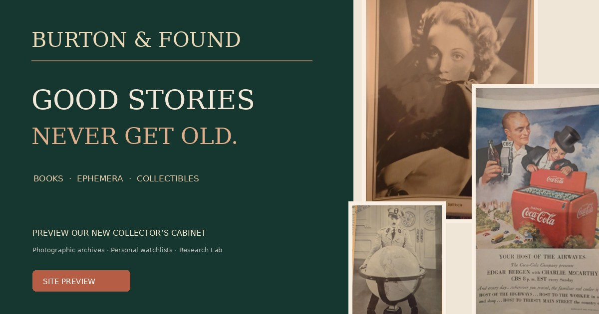

A PERSONAL INVITATION · DESIGN REVIEW
Good stories
never get old
Welcome to a preview of Burton & Found, an independent Canadian shop for vintage books, original ephemera and collectibles worth keeping. We'd value your feedback before the shop opens for orders.
Preview only · No live payments · Registration needs a connected backend · No information sent to us automatically

BOOKS · PAPER · FOUND OBJECTS5 STOPS / YOUR PREVIEW TOUR
Take a look around
Explore each part of the site. The features linked below work in a normal website browser; the account page includes a sample walkthrough when live sign-up is not configured.
The collected shop
Original Coca-Cola and Hollywood ephemera, galleries, pricing, search, product detail and watchlist.
Explore the shop ↗ 02 / THE LIBRARYVintage books
Review the upcoming books department and how newly catalogued editions will be presented.
Explore books ↗ 03 / THE OBJECT CABINETCollectibles
A home for carefully researched small vintage objects, keepsakes and unusual finds.
Explore curiosities ↗ 04 / FREE RESEARCHPaper Trail Lab
Try visual matching, vintage text clues, research cards and the decade challenge.
Open the Lab ↗ 05 / COLLECTOR CABINETCustomer accounts
Test a clearly labelled sample account with watched items, saved bags, profile and addresses.
See my cabinet ↗YOUR EYE FOR DETAIL MATTERS
Tell us what you think
Feedback is prepared on your device; nothing is automatically submitted to the shop. Send it using your email app, copy it, or download it as a text file.